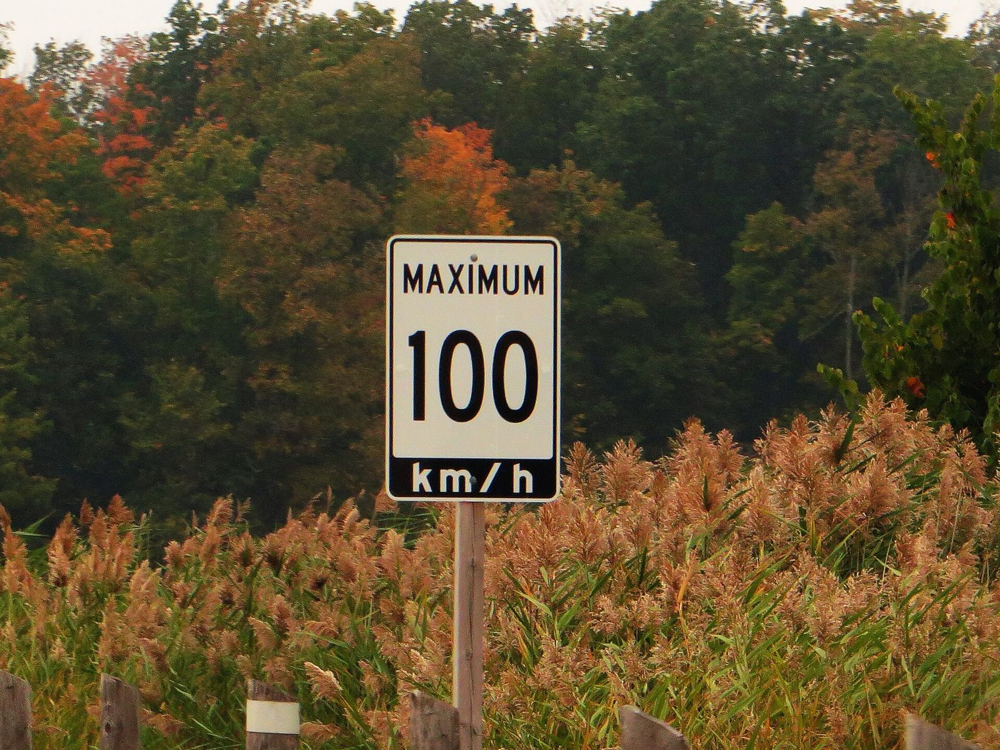
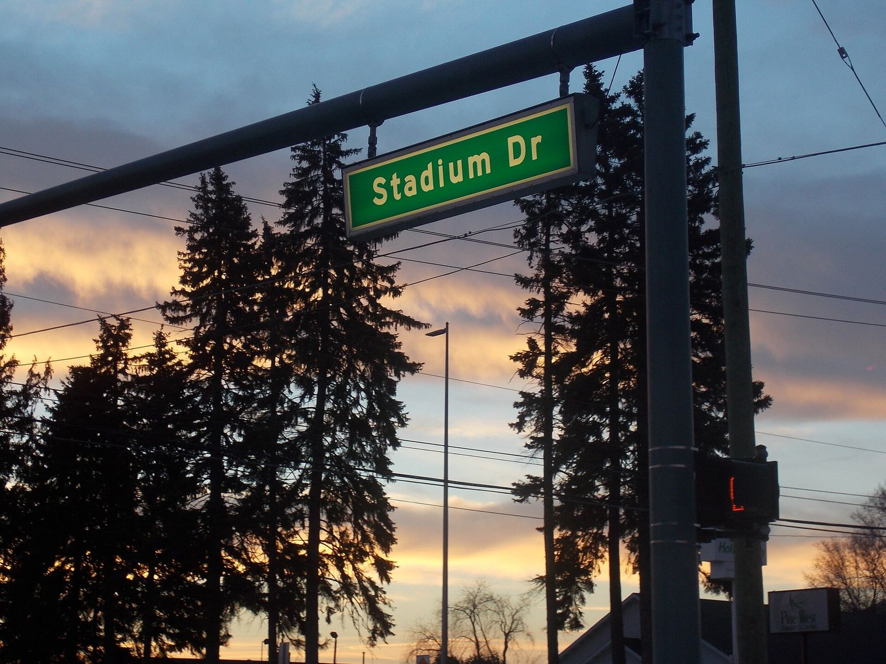
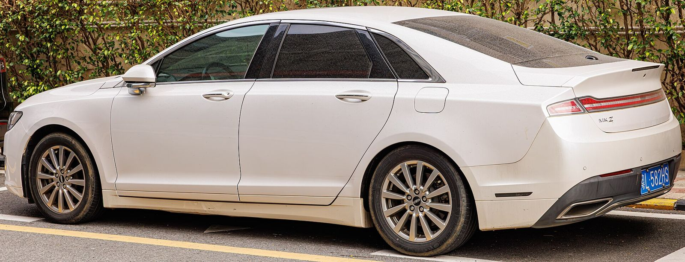
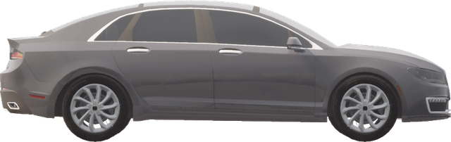
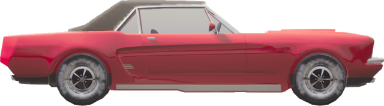
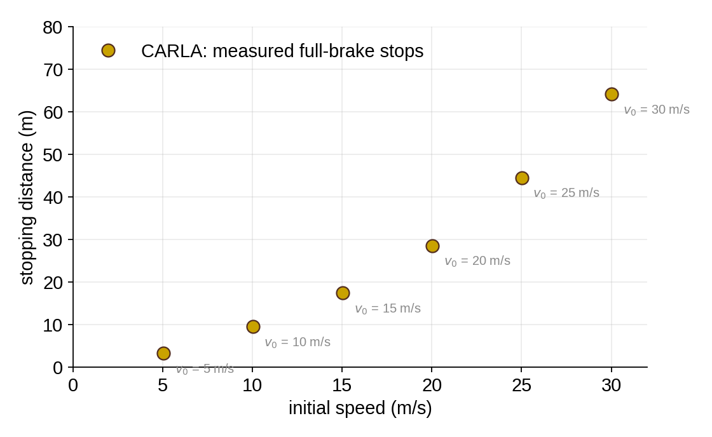

What Is the Point of Vehicle Dynamics?
Starting from Basics: Point Mass Model and Constant Acceleration
Zachary D. Asher, PhD
ME 4650/5950 Vehicle Dynamics & Control
Lecture 1A, Monday, January 11, 2027
This handout is the notes for the lecture. Write your work in the boxes and blanks. Group-example solutions are posted on eLearning after class, and quiz problems look like them.
© 2027 Zachary D. Asher, CC BY 4.0. Photo credits and licenses: github.com/AD-Assurance-Lab/vehicle-dynamics, file lectures/wk01-point-mass/README.md. The WMU logo is a registered trademark of Western Michigan University and is not covered by this license.
Did you know?
Your guess:
Write your guess, then the answer.
- How many registered motor vehicles are there in the United States? Guess ________ Answer ________
- The United States has about 2 billion parking spots. How many is that per vehicle? Guess ________ Answer ________
- Toyota builds about 27,000 cars a day. How many does Ferrari build? Guess ________ Answer ________
- What share of owners name their car? Guess ________ Answer ________
- What share of drivers admit to singing in the car? Guess ________ Answer ________
Cars are everywhere, people love them, and nearly every one of them is now steered, braked and accelerated by software. That software has to respect physics.
The vehicle dynamics and control field
PID: proportional, integral, derivative control; cruise control holds a set speed by feedback. Kalman filter: the best-known estimator, which blends a model with noisy sensors; stability control has to estimate how much the car is sliding, because no production sensor measures it. Pure pursuit and Stanley: two path-tracking controllers. MPC: model predictive control. End-to-end AI: one neural network from camera images to steering and speed, in place of hand-written code. Vehicle dynamics is the study of how a vehicle moves and why; control is making it move the way we want. Sources: Chrysler Auto-Pilot, 1958 Imperial (Wikipedia, Cruise control); Bosch ESP, 1995 Mercedes-Benz S-Class coupe (van Zanten, SAE 950759); Nissan Cima lane keeping, January 2001 (Nissan); GM turbocharged engine MPC in production from 2018 (Bemporad et al., SAE 2018-01-0875); Tesla FSD v12, a single end-to-end network, to customers from January 2024 (Tesla release notes).
You will build every one of them
The course climbs the same ladder as the field: start with the simplest model, find where it fails, add only what is needed. Every Friday lab makes that week's model drive a car in CARLA, the driving simulator we use all semester.
A feel for speed: the Ontario sign

You cross the Blue Water Bridge into Ontario and pass this sign. How fast is that in mph? In m/s?
\( \dfrac{100\ \text{km}}{1\ \text{h}} \times \dfrac{1\ \text{mi}}{1.609\ \text{km}} \)
\( \dfrac{100\ \cancel{\text{km}}}{1\ \text{h}} \times \dfrac{1\ \text{mi}}{1.609\ \cancel{\text{km}}} = \) 62.2 mi/h________
\( \dfrac{100\ \text{km}}{1\ \text{h}} \times \dfrac{1000\ \text{m}}{1\ \text{km}} \times \dfrac{1\ \text{h}}{3600\ \text{s}} \)
\( \dfrac{100\ \cancel{\text{km}}}{1\ \cancel{\text{h}}} \times \dfrac{1000\ \text{m}}{1\ \cancel{\text{km}}} \times \dfrac{1\ \cancel{\text{h}}}{3600\ \text{s}} = \) 27.8 m/s________
A Michigan freeway, 70 mph, is 113 km/h. Ontario's highways run a little slower.
Write every factor as a fraction with its units, then cross off units in pairs. What is left has to be the unit you want. If it is not, a factor is upside down. Engineers do the math in m/s and feel speed in mph.
A feel for speed: a test on Stadium Drive?

An engineer asks you to run a braking test at 35 m/s. Can you do it on Stadium Drive, a city street?
\( \dfrac{35\ \text{m}}{1\ \text{s}} \times \dfrac{3600\ \text{s}}{1\ \text{h}} \times \dfrac{1\ \text{km}}{1000\ \text{m}} \)
\( \dfrac{35\ \cancel{\text{m}}}{1\ \cancel{\text{s}}} \times \dfrac{3600\ \cancel{\text{s}}}{1\ \text{h}} \times \dfrac{1\ \text{km}}{1000\ \cancel{\text{m}}} = \) 126 km/h________
\( \dfrac{126\ \text{km}}{1\ \text{h}} \times \dfrac{1\ \text{mi}}{1.609\ \text{km}} \)
\( \dfrac{126\ \cancel{\text{km}}}{1\ \text{h}} \times \dfrac{1\ \text{mi}}{1.609\ \cancel{\text{km}}} = \) 78.3 mi/h________
Freeway speed, so no: this test belongs on a closed track, or in CARLA, the driving simulator we use in lab.
Three speedometers, one car
| mph | 15 | 25 | 35 | 55 | 70 |
|---|---|---|---|---|---|
| km/h | ? | ? | ? | ? | ? |
| m/s | ? | ? | ? | ? | ? |
The simplest model: a point mass

It ignores
- size, shape and how the mass is spread
- wheelbase, track width and steering geometry
- tire forces and the powertrain
It keeps
- position \(x(t)\)
- velocity \(v = dx/dt\)
- acceleration \(a = dv/dt\), assumed constant today
Not true once forces depend on position or speed.
This is kinematics: motion only, no forces. It is called a point mass because all the mass sits at one point; today we do not even need the mass. Vehicle dynamics uses a standard frame: x forward along the car (longitudinal), y to the driver's left (lateral), z up. This photo is taken from the car's left rear, so +y points toward us. Today the car moves along x only. Wheelbase: the distance between the axles. Track width: the distance between the left and right wheels. Air drag grows with speed, so with drag the acceleration is no longer constant.
Constant acceleration assumption: velocity equation
At \(t = 0\) the car is at position \(x_0\) with speed \(v_0\). Acceleration \(a\) stays constant.
The prime on \(t'\) and \(v'\) marks the variable of integration, so it does not clash with the limits \(t\) and \(v\). Units check: m/s² times s is m/s.
Constant acceleration assumption: position equation
Constant acceleration: no time variable
Four equations, one assumption
| Equation | Form | Leaves out |
|---|---|---|
| (1) | \(v = v_0 + a t\) | \(x\) |
| (2) | \(x = x_0 + v_0 t + \tfrac12 a t^2\) | \(v\) |
| (3) | \(v^2 = v_0^2 + 2a(x - x_0)\) | \(t\) |
| (4) | \(x = x_0 + \tfrac12 (v_0 + v)\,t\) | \(a\) |
Two ways to merge onto US-131

20 m/s, speeds up at one constant rate \(a_A\)30 m/s
holds 20 m/s for the first 100 m, then speeds up at 0.625 m/s²30 m/sBoth enter at 20 m/s (45 mph) and leave the 500 m merge lane at 30 m/s (67 mph).
- Car A: what constant acceleration \(a_A\) does it need? How long does the merge take?
- Put car B's start and finish into the same equation. Does the answer describe car B?
- Car B: how long does it hold 20 m/s? How far and how long does it speed up?
- Which car reaches 500 m first, and by how much? What did you assume for car B?
Car B is two constant-acceleration pieces, so equations (1) to (4) hold on each piece separately: the speed and position at the end of the first piece are the start of the second. Holding a speed is the piece with \(a = 0\).
Watch the merge
t = 0.0 s
Play it after working the example. The clock and each car's finish time come from equations (1) and (2), applied piece by piece.
A stop is well modeled by constant acceleration
Name it: the braking deceleration \(a_b > 0\), so \(a = -a_b\).
\( d = \dfrac{v_0^2}{2\,a_b} \)
Most motions are not constant acceleration: a car speeding up loses acceleration as it gains speed, and air drag grows with the square of speed. A hard stop is the exception, which is why equation (3) works so well here. Distance grows with the square of speed, which is most of what automatic emergency braking needs to know.
What sets the braking deceleration? Tire friction
\(\mu\) is the friction coefficient between tire and road, \(g = 9.81\) m/s². This is Newton's second law and Coulomb friction from physics, nothing more. It assumes all four tires brake at their friction limit (anti-lock brakes keep them close to it) on a flat road. Wet asphalt is about 0.5, snow about 0.2.
Friday's lab: how much grip do CARLA's tires have?
Task: CARLA, the driving simulator we use in lab, never tells you its tire friction \(\mu\). Measure it.

Dots: measured. CARLA's Lincoln MKZ brakes fully from each starting speed \(v_0\), and we record the distance \(d\).
Curve: constant acceleration theory. Pick \(\mu\), compute \(d = v_0^2 / (2\mu g)\) for every \(v_0\) from 0 to 32 m/s in small steps, and join the points.
v0 = np.linspace(0, 32, 65) # m/s
d = v0**2 / (2 * mu * 9.81) # mThe best fit to the four fastest stops (least squares) is \(a_b = 7.0\) m/s², so \(\mu = 7.0 / 9.81 = 0.71\). Strictly this is the friction the tires used, which is at most the friction they have. Below 15 m/s CARLA needs more distance than the curve: at 5 m/s, 3.3 m against 1.8 m. The deceleration is not constant through a short stop, so equation (3) does not hold exactly.
Credits
- Photos from Wikimedia Commons and Flickr, unmodified apart from resizing. Each keeps its own license.
- Freeway at rush hour: Prayitno, CC BY 2.0. Denver parking lot: Heath Alseike, CC BY 2.0.
- 2011 Toyota Corolla: NHTSA, public domain. Ferrari factory, Maranello: CAPTAIN RAJU, CC BY-SA 4.0.
- Michigan vanity plate: Dwight Burdette, CC BY 3.0. "Road Trip Sing-a-long": nikoretro, Flickr, CC BY-SA 2.0.
- Speed limit 100, Highway 402, Ontario: Ken Lund, CC BY-SA 2.0. Stadium Drive, Kalamazoo: SydneySmith, CC BY-SA 4.0.
- Lincoln MKZ: Dinkun Chen, CC BY-SA 4.0.
- CARLA images, including the two cars in the worked example, rendered by the course; CARLA assets are CC BY 4.0. Braking data: CARLA 0.9.16, vehicle.lincoln.mkz_2020.
- The WMU logo is a registered trademark of Western Michigan University and is not covered by this lecture's license. The two-car example is from the Spring 2026 offering.
- © 2027 Zachary D. Asher. The rest of this lecture is licensed CC BY 4.0: reuse it with credit. Its code is Apache-2.0.
Full source links for every photo are in this week's README.